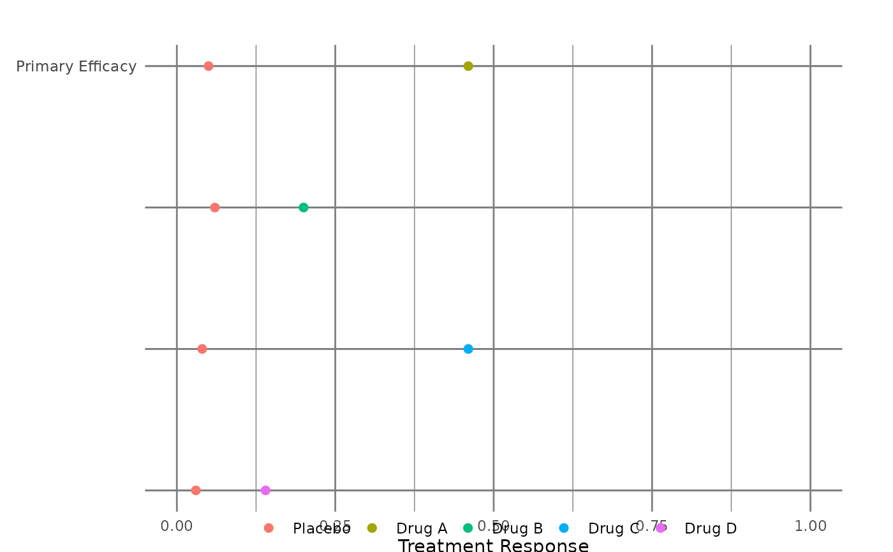

generate_fig_lft.RdCreate Dot plot
generate_fig_lft(
data,
fact_subset = "Benefit",
type_subset = "Binary",
type_scale = "Fixed",
x_scale_n1_p1 = "N",
xlabel = NULL,
ylabel = NULL,
select_nnx
)(character) Data for figure
(character) filter data
(character) Selected subset "Binary" or "Continuous"
(character) selected scale display type
(character) fix x-axis scale between 0 and 1
(character) Label for x-axis
(character) Label for y-axis
(character) show NNT/NNH
dot_plot_src <- subset(effects_table, !is.na(Prop1))
bdin <- subset(dot_plot_src, Factor == "Benefit")
rdin <- subset(dot_plot_src, Factor == "Risk")
fplot_data <- prepare_dot_forest_plot_data(
data = dot_plot_src,
drug = unique(dot_plot_src$Trt1),
benefit = unique(bdin$Outcome),
risk = unique(rdin$Outcome),
filters = "None",
category = "All",
type_graph = "Absolute risk",
type_risk = "Crude proportions",
ci_method = "Calculated"
)
#> [2024-08-25 14:32:21] > Prepare Dot plot data for binary outcomes
#> [2024-08-25 14:32:21] > trigger analysis based on type
#> [2024-08-25 14:32:21] >
#> absolute risk CI for binary outcomes is calculated and saved
#> [2024-08-25 14:32:21] > Prepare Forest plot data for absolute risk
#> [2024-08-25 14:32:21] > Prepare Dot plot data for binary outcomes
#> [2024-08-25 14:32:21] > trigger analysis based on type
#> [2024-08-25 14:32:21] >
#> absolute risk CI for binary outcomes is calculated and saved
#> [2024-08-25 14:32:21] > Prepare Forest plot data for absolute risk
#> [2024-08-25 14:32:21] > Dataout object from the create_order_label_der function is created
#> [2024-08-25 14:32:21] > Prepare data for Dot and Forest plots
generate_fig_lft(fplot_data$dot_plot_data,
fact_subset = "Benefit",
type_subset = "Binary",
xlabel = "Treatment Response",
select_nnx = "Yes"
)
#> Scale for x is already present.
#> Adding another scale for x, which will replace the existing scale.
#> [2024-08-25 14:32:21] > Create Dot plot
